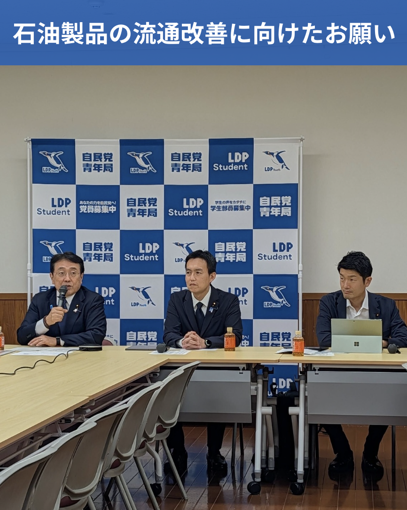
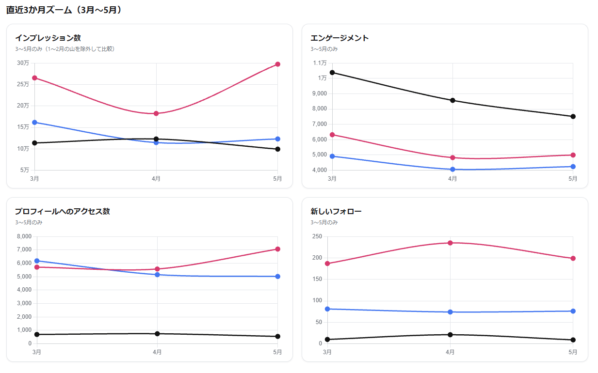
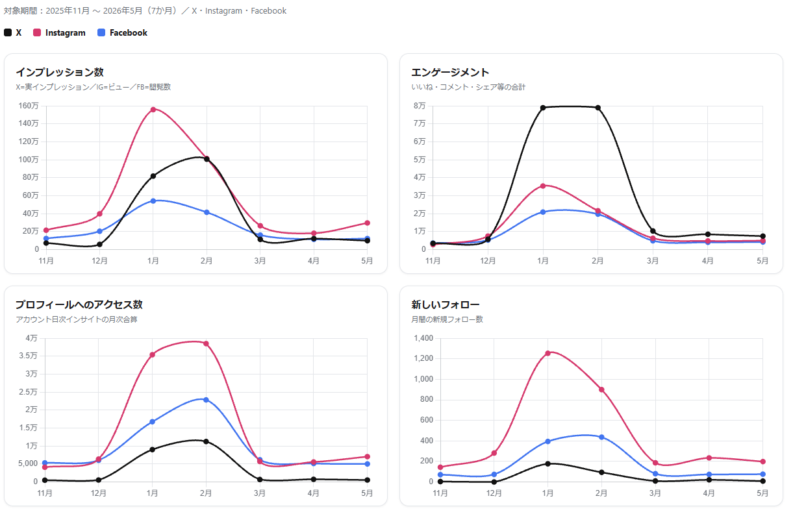

対象期間: 2026/5/1〜5/31｜作成日: 2026-06-11｜@taku_nemoto_｜データソース: 各PFインサイト・週次分析（Notion）
5月はInstagramのインプレッション数が大きく伸びた月となりました。特にリール動画の再生回数の増加が顕著で、従来は3,000回程度の再生にとどまる動画が多かったところ、10,000回を超える投稿が増え、平均再生回数は約20,000回まで伸びています。
内容面では、「議員の働きかけが実った」型の投稿（砂子田交差点の信号機設置決定）が月間最高のリーチを記録。X 15,000表示・48リポスト、IG 73,790インプレッションと、地域住民の実感を伴うコメントも多数寄せられました。体験型のリール動画（バレーボール・田植えなど）と合わせて、5月の伸びを牽引した二本柱です。
冒頭のオープニング映像を撮影するようになったことで、動画のテーマや全体の流れが分かりやすくなりました。視聴者が動画の内容を早い段階で理解できるため、最後まで視聴してもらいやすい構成になっています。
一画面に表示する文字数を減らしたことで、字幕を短時間で理解しやすくなりました。視聴者の負担が軽減され、テンポよく視聴できる動画になっています。
以前は演説や発言の切り抜き、カメラに向かって話す動画が中心でしたが、最近は根本さんがテーマに沿ってイベントに参加・体験する動画（バレーボール大会、田植え体験、スタンプラリー、桜祭り会場の紹介など）が増えています。また、にいぱっぱの店舗前や国会議事堂前など、話している内容と関連する場所で撮影することで、テーマが視覚的にも伝わりやすくなりました。
動画のテーマが一目で分かるサムネイルを設定することで、Instagramの投稿一覧から関心のある動画を選びやすくなりました。撮影はOZMOを活用しています。
| 投稿 | 日付 | X 表示 | IG インプ/ビュー | 備考 |
|---|---|---|---|---|
| 🥇 砂子田交差点 信号機設置決定 | 5/12 | 15,000 | 73,790 | 月間トップ。住民の実感コメント多数・48RT |
| 看護の日 太田綜合病院 | 5/13 | 1,196 | 26,346 | 白衣姿への好意的コメント |
| バレーボール動画 Reel | 5/17 | 815 | 21,000 | 始球式スパイク挑戦。体験型動画 |
| 東北新幹線GW利用者増 引用投稿 | 5/14 | 10,000 | — | 時事×地元観光（ふくしまDC）で引用拡散 |
| ジュピアランド 芝桜まつり Reel | 5/6 | 1,419 | 16,540 | クロスPF 916リアクションで期間最多 |
| 田んぼアート 田植え挑戦 Reel | 5/29 | 1,171 | 14,000 | IGいいね406。体験型の鉄板パターン |
| 大桑原つつじ園 | 5/9 | 2,974 | 10,316 | 花×地元。Xいいね103で月間上位 |
| OECD意見交換会 | 5/28 | 855 | 9,894 | 国政系。Xエンゲ率は健全（約4.7%） |
| ねもトーク 5/8配信告知 | 5/7 | 7,461 | 2,995 | 告知系は拡散役と割り切り |
| ふくしまDC チョコボPR動画 Reel | 5/5 | 1,089 | 4,027 | IGエンゲ率5.29%は月間最高クラス |
X=公開表示回数、IG=インサイトのインプレッション（一部は公開取得可能ないいね・ビューより推定）。高市総理関連リポスト（原文241.7万表示）は自アカウント投稿でないため対象外。
自民党青年局に関する投稿など、毎回似た画角の写真を使用する場合は、写真にタイトルを追加します。Instagramの投稿一覧では同じような写真が並ぶと内容の違いが分かりにくいため、タイトルで各投稿のテーマを一目で判別できるようにします。
次回は、東日本大震災復興加速化本部の提言がまとまった際の投稿で、写真へのタイトル追加を行います。

【編集】オープニングはリアクションから始める
「今日は〇〇へ来ました」という説明からではなく、印象的なリアクションから始めて関心を引きます。
「わあ、このピカチュウ、かわいいですね」
→「今回は、かわいいポケモンたちが天文台とコラボしているということで、見に来ました」
【撮影】体験リアクションのカットを増やす
根本さんが実際に体験しながら感じたことを話すカットの撮影を増やします。
田んぼアート「どうしよう。僕のところだけ育たなかったら」
ポケモン企画「このレックウザ、大きいなあ」
チョコボ企画「芝桜チョコボ、桜が頭に乗っていてかわいい」
説明だけでなく率直な感想やリアクションを入れることで、親しみやすく、最後まで見たくなる動画にします。


1〜2月は選挙期のため数値が突出。3月以降の平常運転期で比較すると、5月のIG伸長が明確。